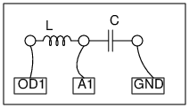

Schematic

- To study the transient response on a series LCR circuit,
we connect them as shown in the figure and apply a zero to 5 volts step,
and capture the resulting change in voltage across the capacitor.
- There could be three types of responses; over damped, under damped
or criticaly damped depending on the C/L ratio and value of R.
Instructions
- Use a 0.1 uF capacitor and the coil provided with ExpEYES.
- The result is under damped, it can be compared with the equation
V(t) = V0 * sin(2pit) * exp(-dt), to obtain the resonant frequency
and damping factor.
- Add series resistor to increase damping.
- Change C to 1uf and repeat.